13 diagram final: Panduan Koneksi + Mulai Dari Sini
Contoh legend (Cara Membaca)
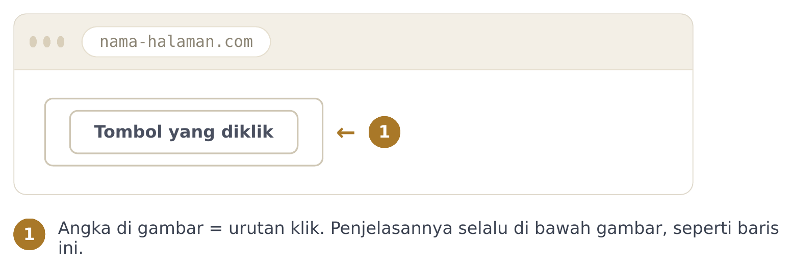
Peta koneksi 4 tools
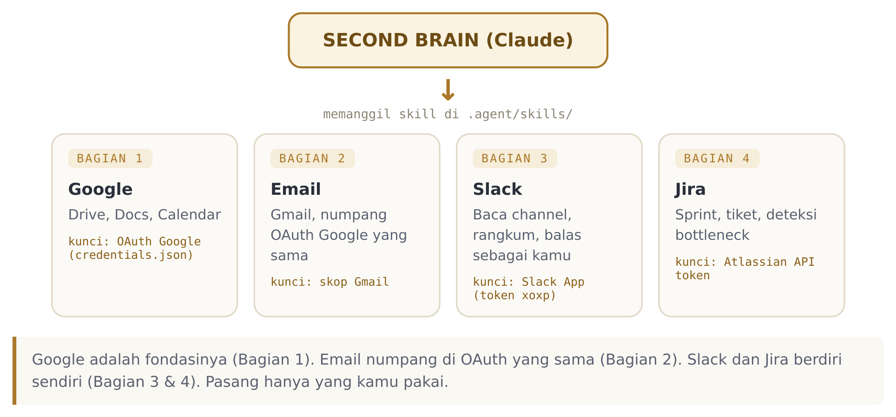
Google Cloud: buat proyek
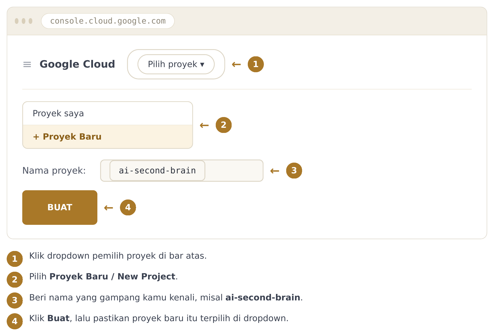
Google Cloud: enable API
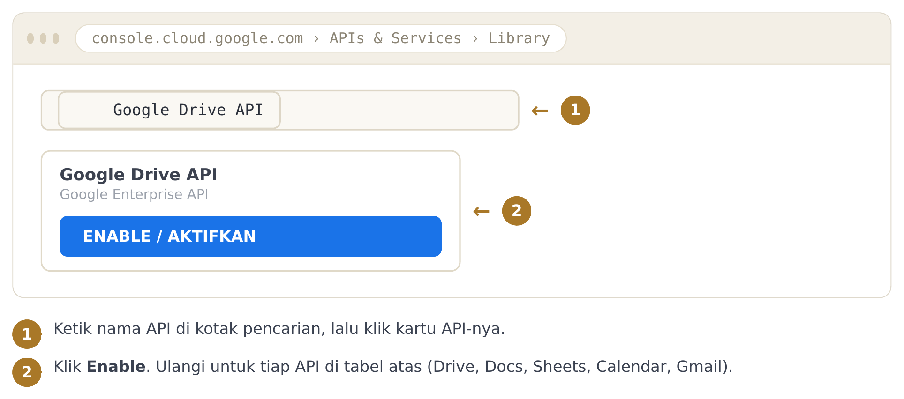
OAuth consent screen
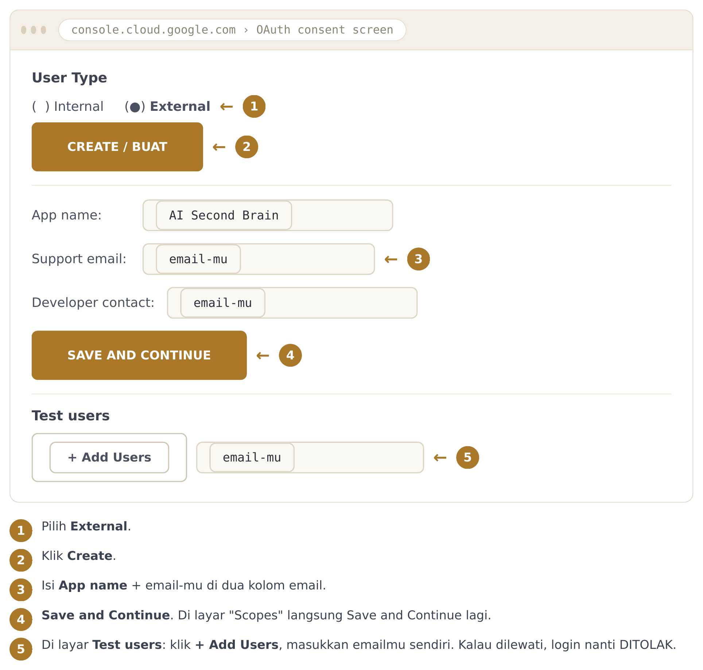
OAuth credentials (Desktop app)
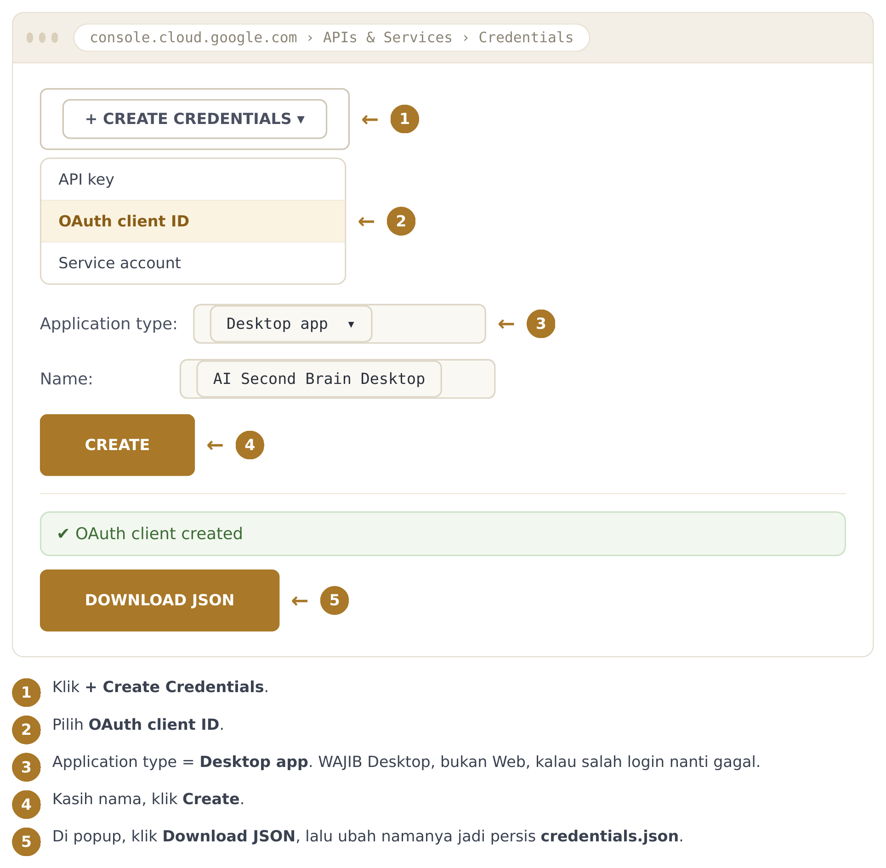
Login: layar unsafe + copy code
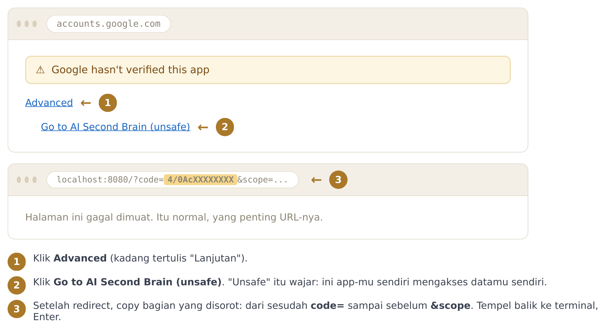
Slack: create app
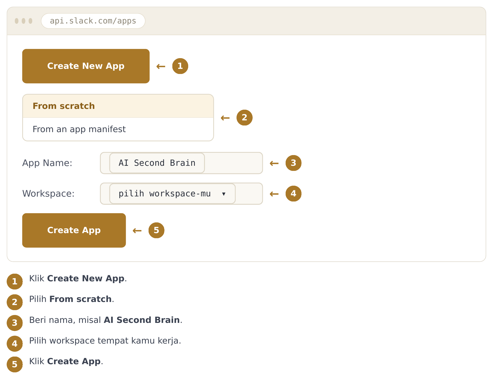
Slack: install + salin token
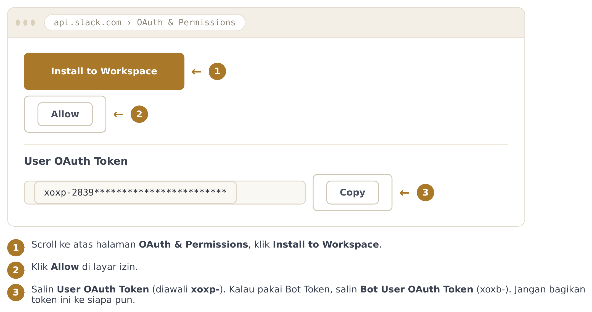
Jira: Atlassian API token
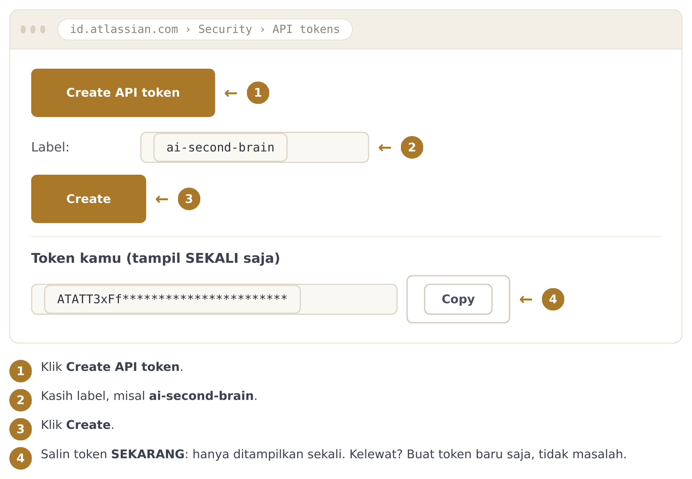
Mulai Dari Sini: roadmap 3 level
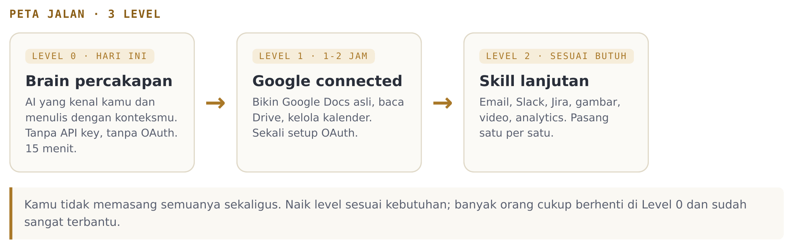
Mulai Dari Sini: 6 langkah
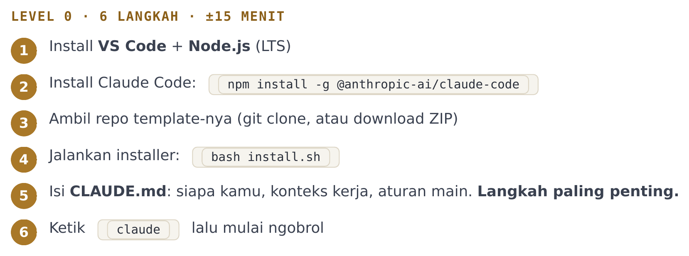
Mulai Dari Sini: pilih tools
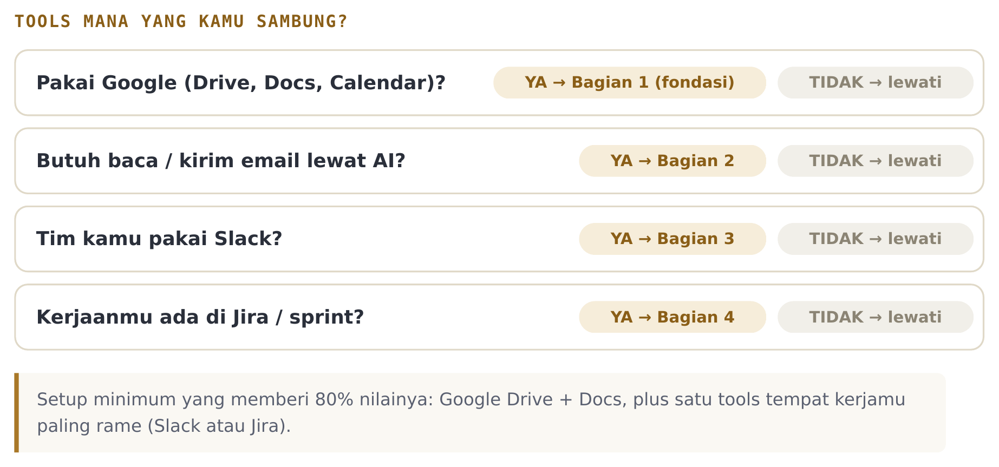